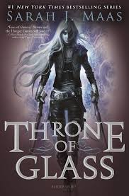
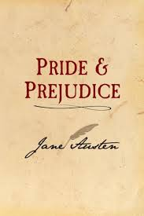

Welcome to Books Galore!
This is a place to explore
some of my favorite books that
I have read over the years.
From Non-fiction to Fantasy,
there is a wide variety of
titles to enjoy.

This illustrious fantasy novel follows
assassin Celeana Sardothian as she
competes in a competiton to eventually
win her freedom. However, as competitors
are being murdered one by one, she begins
to discover that there are darker things
at work inside of the the Glass Castle.
This suspensefull mystery novel follows
short order cook Odd Thomas who is in love
with the most beautiful woman in the world
and has the ability to commmune with the
dead. When the arrival of a mysterious man
leads him to belive that a tradegy is about
to occur, he rushs tostop it before a
mass exodus of lives are taken.

Elizabeth Bennet does not belive she
she could marry for any reason other
than love. When the arrival of the
Mr. Bingley brings romance to her
her sister, Jane; Elizabeth could not
be more thrilled for her. However,
accompanying Mr. Bingley is his life
long friend Mr. Darcy. Although both
Darcy and Elizabeth are at first
determined to have nothing to do with
the other, they eventually begin to
wonder if they are in fact the ones
for each other after all.